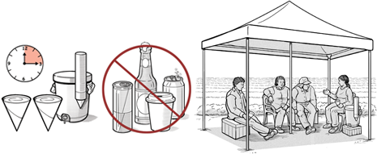
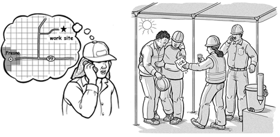
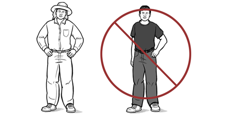
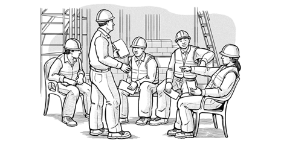
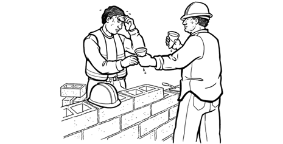

PELIGRO: ¡las condiciones son peligrosas!
¡Las condiciones son peligrosas! Las enfermedades relacionadas con el calor pueden presentarse más rápido y ser más graves en este nivel de riesgo. Se recomienda tomar medidas adicionales.
Reprograme todas las tareas que no sean esenciales para otro día en que el índice de calor sea más bajo. Cambie el horario del trabajo esencial a la parte más fresca del día: comience más temprano, divida el turno de trabajo, o establezca turnos de trabajo vespertinos o nocturnos.
No se deben realizar tareas extenuantes ni aquellas que requieran el uso de equipo de protección (p. ej., ropa no transpirable o vestimenta de protección química impermeable.
Si se debe realizar una tarea esencial o de emergencia con este índice de calor, deberá estar presente en el sitio una persona que tenga conocimientos para modificar las actividades laborales y establecer los horarios de trabajo y descanso. DETENGA EL TRABAJO si no es posible tomar medidas de protección.
Agua y sombra
- Debe haber cantidades adecuadas de agua para beber en lugares convenientes y visibles, cerca del área de trabajo.
- Establezca un horario claro para tomar agua.
- Anime activamente a los trabajadores a tomar agua con frecuencia.
- Si trabajan menos de 2 horas en el calor, realizando actividades moderadas, deben beber 1 vaso (8 onzas) de agua cada 15 a 20 minutos.
- Si sudan por varias horas, deberán tomar bebidas deportivas que contengan electrolitos balanceados.
- En general, el consumo de líquidos no debería superar los 6 vasos por hora.
- Establezca áreas de descanso frescas y con sombra.
- Provea lugares con sombra, sombreros y protector solar, y fomente su uso.

Preparación y respuesta a emergencias
- Alerte a los trabajadores acerca del índice de calor peligroso e identifique todas las precauciones establecidas para el sitio de trabajo.
- Debe haber en el sitio una persona con conocimientos para determinar el horario de trabajo y descanso, y llevar a cabo el monitoreo fisiológico.
- Chequee el pronóstico del tiempo con regularidad y asegúrese de que haya un plan antes de comenzar el trabajo al aire libre en condiciones calurosas.
- Asegúrese de que haya asistencia médica (centro médico, hospital, servicios de emergencia) cercana; si no hay, los primeros auxilios deberán realizarse en el sitio.
- Es necesario que haya disponible personal capacitado. adecuadamente y suministros médicos apropiados.
- Debe saber dónde está en caso de que necesite llamar al 911.
- Llame al 911 y refresque a todo trabajador que esté inconsciente, confundido o no tenga coordinación. Podría ser un golpe de calor, una emergencia médica.

Trabajo y descanso
- Aclimate a los trabajadores nuevos y a los que vuelvan al trabajo. Estas personas tienen un mayor riesgo de presentar enfermedades relacionadas con el calor. Supervise atentamente a los trabajadores que no estén aclimatados.
- Establezca y siga un horario de trabajo y descansos. Tenga en cuenta el nivel de esfuerzo y el tipo de equipo personal utilizado.
- Los supervisores deben hacer cumplir las pausas para descansar en áreas frescas, a la sombra.
- Los trabajadores deben quitarse la ropa de protección (si es posible) durante el descanso.
- Aumente el tiempo de descanso a medida que suba el índice de calor o si los trabajadores muestran signos de enfermedad relacionada con el calor.
- Ajuste las actividades laborales:
- Las tareas más extenuantes deben hacerse al principio del día.
- Siempre que sea posible, coloque toldos que den sombra sobre las áreas de trabajo.
- Permita que solo los trabajadores aclimatados realicen las tareas más extenuantes.
- Reduzca el ritmo de las tareas extenuantes.
- Busque otras maneras de adaptar las actividades laborales (agregue más trabajadores, rote las tareas).
- Reprograme las actividades para cuando el índice de calor sea más bajo (mañana, tarde, otro día).
- Modifique los horarios de trabajo o descanso teniendo en cuenta las necesidades de quienes usen ropa protectora.
- Se debe monitorear fisiológicamente a los trabajadores (p. ej., la temperatura corporal, la frecuencia cardiaca).
- Se debe rotar a los trabajadores para que realicen tareas que no requieran ropa protectora durante parte de su turno.
- Cuando sea posible, se debe fomentar que los trabajadores se quiten la ropa de protección durante sus descansos.
- Proporcione medios para que los trabajadores se refresquen (p. ej., ropa humedecida en agua, chalecos de enfriamiento, estaciones con rociadores).

Capacitación
- Repase los signos y síntomas de las enfermedades relacionadas con el calor y las precauciones específicas para el sitio durante las reuniones diarias o las charlas informativas de seguridad.
- Asegúrese de que todos estén capacitados en lo siguiente:

Esté atento a las enfermedades relacionadas con el calor
- Chequee la frecuencia cardiaca (p. ej., frecuencia cardiaca sostenida >180 latidos por minuto menos la edad del trabajador), la temperatura (normal = 98.6 °F; y las temperaturas más altas indican que el cuerpo no se está enfriando lo suficientemente rápido), u otros signos físicos de exposición al calor durante los descansos.
- Establezca un sistema de cuidado mutuo para permitir que los trabajadores estén atentos a signos y síntomas de enfermedad relacionada con el calor en los otros.
- Los supervisores deben mantener la comunicación con los trabajadores en todo momento, estar atentos a los signos o síntomas de enfermedad relacionada con el calor y fomentar las pausas para tomar agua y descansar.
